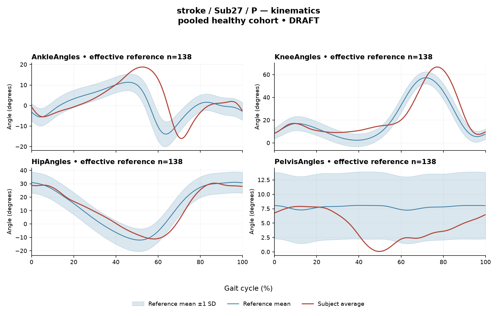

RDDF586E66DFF35F4
rater3 / 11 of 150 / Case stroke_Sub27_P / Review row 12
Report: verbatim text
Text file for exact quotations# Gait Report Interpretation — Sub27_P **Interpretation version:** limited-evidence-v3.1-candidate **Scope:** Research interpretation of supplied quantitative summary only. Not a diagnosis, not a treatment recommendation. --- ## 1. Objective Findings **Participant and side.** Sub27_P is a member of the stroke cohort; all findings below pertain to the **paretic** side. The released cycle for this limb runs from one initial contact of the paretic limb (0%) to the next initial contact of the same limb (100%); these are successive occurrences, not a single instant. No intermediate event (including individual toe-off) is supplied, so all timing in this report is expressed as a percentage of the analysis cycle and no percentage is assigned to a gait phase. **Spatiotemporal values as supplied.** - Gait speed 0.75 m/s. The accompanying label "limited community ambulator (0.4–0.8 m/s)" denotes a speed band only; it does not describe measured walking independence, safety or real-world mobility. - Cadence 82.5 steps/min. - Step length symmetry index −15.8% (successive-footfall definition). By the stated sign convention, the negative value indicates the **paretic step is shorter** than the non-paretic step. An instantaneous-heel-position definition can yield a different value for some subjects; only the successive-footfall value is supplied here. - Composite kinematic deviation score (GPS-like) 6.81. **Reference and comparability limit (applies to every comparison in this report).** The deviation reference actually used is the pooled 138-subject healthy set (1001 phase points, main_cohort_excel), pooling both body sides and all ages, and it is not matched to this participant. Critically, this subject's speed of 0.75 m/s lies **below the 0.80 m/s floor** of the healthy cohort's self-selected speeds, so **no speed-matched healthy reference exists in this dataset**. Every deviation reported below therefore conflates slow-walking effects with stroke-related control changes; the two cannot be separated from these data. Stroke-group membership does not, by itself, make any given deviation a stroke effect, and no disease effect, severity grade or clinical diagnosis can be established from these comparisons. **Channels available and not supplied.** Sagittal-plane kinematics for ankle, knee, hip and pelvis are available; coronal and transverse plane data are not included in this input. Seven EMG channels (GAS, RF, VL, BF, ST, TA, ERS) with ensemble-averaged envelopes and two CCI pairs are supplied. Not supplied in this input: individual toe-off and other gait events, matched muscle-specific normal timing references, stride-level data or variability, raw-signal quality checks, expert plots, age, sex, time post-stroke, clinical stroke scores, and any non-paretic-side EMG or kinematics. Information absent from this summary must not be assumed absent from the source release. --- ## 2. EMG Envelope and Threshold Findings **How these intervals must be read.** All values below are properties of the **ensemble-averaged envelope** for each muscle, under the stated rule: regions where the mean curve exceeds 20% of *its own* peak, with a minimum retained interval of 3% of the cycle. Normalization uses a shared maximum across available strides per participant, side and muscle (in the checked stroke release the denominator is not shared between sides), so amplitudes are **relative envelope values** — not activation level, force or strength, and not comparable as a strength ranking across muscles. These are group-of-strides averages: they do not establish that any individual stride showed the same pattern, and they carry no information about stride-to-stride variability. Detected intervals are not physiological onsets, offsets, durations or contractions, and regions outside them are not established as inactive. An interval written with X > Y wraps the 100%→0% boundary, meaning the mean envelope remained above its threshold across the cycle-defining initial contact. Because no matched normal timing reference is supplied, no interval is characterized here as normal, early, delayed or prolonged. | Muscle | Retained interval(s), % cycle | Coverage | Peak norm. amp. | Max \|z\| (location) | |---|---|---|---|---| | GAS | 22–28; 36–66; 99–21 (wraps) | 58% | 0.55 | 15.2 above ref., at 57% | | RF | 11–61; 69–76; 90–95; 99–11 (wraps) | 76% | 0.58 | 6.2 above ref., at 36% | | VL | 87–56 (wraps) | 69% | 0.58 | 6.4 above ref., at 36% | | BF | 16–20; 57–60; 89–15 (wraps) | 35% | 0.79 | 2.9 above ref., at 97% | | ST | 45–62; 86–28 (wraps) | 58% | 0.68 | 3.4 above ref., at 51% | | TA | 68–37 (wraps) | 69% | 0.63 | 5.9 above ref., at 32% | | ERS | 49–28 (wraps) | 81% | 0.81 | 8.2 above ref., at 63% | **Descriptive observations.** - All seven mean envelopes show boundary continuity — each remains above its own 20% threshold across the initial-contact boundary at 0%/100%. This is a property of the averaged curves and does not imply continuous contraction, nor that each stride behaved this way. - Coverage ranges from 35% (BF) to 81% (ERS) of the cycle. VL, TA and ERS each retained a single wrapping interval; GAS, RF, BF and ST retained multiple separated intervals with below-threshold gaps between them at the mean-envelope level (for example, GAS between 28% and 36%, and between 66% and 99%). For the single-interval muscles, the complement of the retained interval (e.g. TA between 37% and 68%) is likewise below the 20%-of-own-peak criterion on the mean curve; this is a threshold statement, not evidence of neural silence. - Peak normalized amplitudes cluster between 0.55 and 0.81 relative to each curve's own scaling. Because each muscle is scaled to its own participant/side/muscle denominator, these numbers cannot be compared across muscles as relative effort or strength. **Max |z| interpretation.** Max |z| is an extreme-value statistic — the largest standardized difference from the phase-specific pooled-reference mean across 1001 phase points — not a single-observation z-score, and its location marks the largest standardized difference, **not** necessarily the time of peak envelope amplitude or any gait event. "Above reference" means above the reference mean at that phase point, not above a healthy percentile limit. The conventional 2-SD rule does not apply: in this dataset every one of 109 healthy controls exceeds |z| = 2 on at least one muscle, and per-muscle healthy 95th percentiles for this statistic run 3.65 (ERS) to 4.61 (TA), higher still under leave-one-out. Against those per-muscle healthy ranges, BF (2.9) sits below its cohort percentile; TA (5.9), ERS (8.2), RF (6.2), VL (6.4) and especially GAS (15.2) exceed the corresponding per-muscle 95th-percentile values, with GAS the largest standardized difference in this participant. Exceeding a pooled calibration percentile is a descriptive statement about distance from an unmatched reference — those percentiles are not matched leave-one-out normal limits, and none of these values establishes abnormality, a mechanism or a diagnosis, particularly given the absent speed match. **Co-contraction indices.** CCI here is the Falconer–Winter whole-cycle overlap index of normalized envelopes (2 × common area / summed areas). It is not simultaneous activation time, not muscular force, and not a phase-specific result; it can be non-zero even where detected bursts do not overlap, because sub-threshold envelope area contributes. It is method-dependent, so values and thresholds from other studies or algorithms do not transfer. - **TA vs GAS = 0.40**, essentially at the healthy-cohort median of 0.39 and within the supplied 2.5th–97.5th percentile interval (0.24–0.59). - **RF vs BF = 0.54**, below the healthy median of 0.68 and within the supplied interval (0.48–0.83), lying nearer its lower endpoint. Falling inside these intervals does not establish physiologically normal co-activation or normal muscle function, just as falling outside would not establish pathological co-activation, stiffness or impaired motor control. The same unmatched-reference and speed limitations apply to these comparisons. --- ## 3. Kinematic and Reference Comparisons All kinematic values are **sagittal plane only**; no coronal or transverse channels are included, so no statement about frontal- or transverse-plane mechanics is possible. | Channel | Sagittal ROM | Gait Variable Score | |---|---|---| | Ankle | 34.8° | 7.82 | | Knee | 59.2° | 9.04 | | Hip | 41.6° | 5.03 | | Pelvis | 7.8° | 4.16 | **Composite (GPS-like) = 6.81**, the RMS of the four sagittal GVS values — this is not the validated 9-variable GPS. Against the supplied composite reference (median 5.1, 95th percentile 10.7), 6.81 lies above the median and below the 95th percentile. GVS and the composite are **summary magnitudes of difference** from the stated reference across the cycle. They do not indicate the direction of any waveform offset (e.g. more flexed vs. more extended), do not localize the difference to any phase or event, and do not identify which portion of the curve drives the value. Among the four channels, the knee shows the largest summary difference and the pelvis the smallest, but this ordering describes distance from an unmatched pooled reference, not clinical importance. ROM values are reported as measured. ROM alone does not establish a clinical restriction in the absence of an appropriate matched comparison, and none is supplied here — no per-joint ROM reference values are provided in this input, and the pooled kinematic reference is neither age- nor speed-matched, with this participant's 0.75 m/s below the reference speed floor. Accordingly, these kinematic differences describe deviation from that specific reference and cannot be attributed wholly, or in defined proportion, to stroke pathology; slow-walking effects are inseparable from stroke-related changes in these data. No severity grade or statistical significance can be assigned. --- ## 4. Questions for Further Clinical Assessment The following are open questions raised by the limits of this summary. None presupposes that the mechanism or measurement issue in question has been observed. 1. Are individual gait events — particularly paretic toe-off and contralateral events — retrievable from the release for this participant, so that envelope intervals could be placed relative to measured events rather than expressed only as cycle percentages? 2. Is a speed-matched or age-matched reference subset (or a leave-one-out comparison) obtainable for a participant walking at 0.75 m/s, given that the available healthy cohort begins at 0.80 m/s? Absent this, can any analysis separate slow-walking effects from stroke-related effects? 3. Are stride-level EMG envelopes and stride counts available, so that it could be examined whether the boundary-continuous pattern seen in the mean curves reflects consistent behaviour across strides or is an averaging product? 4. Are raw-signal quality records, electrode placement notes, and cross-talk checks available for this session — particularly for GAS, which shows the largest standardized difference from the reference (15.2), and for ERS, which shows the highest mean-envelope coverage (81%)? 5. Would the site consider whether any plausible measurement contributor — saturation, baseline offset, or a low participant-/side-/muscle-specific normalization denominator — could influence the relative amplitude and coverage values, since normalization is to each curve's own peak? 6. Is non-paretic-side EMG and kinematic data available for this participant? Note that the EMG normalization denominator is not shared between sides in this release, which constrains direct between-side amplitude comparison. 7. Are the descriptive fields that apply to the stroke cohort — time post-stroke, clinical scores, age and sex — retrievable, to contextualize the magnitude of the summary deviations? 8. Would recomputing step-length symmetry under the instantaneous definition change the −15.8% value materially for this participant, given that the two definitions diverge in some subjects? 9. Are coronal- and transverse-plane kinematics available, since the present interpretation is restricted to sagittal channels and the composite score is a 4-channel GPS-like RMS rather than the validated 9-variable GPS? 10. How does the clinical examination compare with these instrumented summary findings, and are there observations that the averaged-envelope and pooled-reference framework cannot capture? **Summary caution.** This report describes averaged-envelope properties, threshold-detected intervals, whole-cycle overlap indices and summary deviation magnitudes relative to an unmatched pooled healthy reference. It establishes no physiological onset or offset, no phase-specific function, no measure of strength, force or variability, and no diagnosis, mechanism or severity. No treatment implications are drawn.
Coverage rows
| Excel row | ID | Required content | Components |
|---|---|---|---|
| 60 | R085 | Describe walking speed 0.75 m/s and that it is below the stated 0.80 m/s reference floor; no reference at this speed is supplied. | AND: displayed speed and that it lies below the 0.80 m/s reference floor, so no speed-supported healthy reference exists in this dataset. Optional: cadence, speed-band label (not a functional claim). One sentence may also serve the comparability half of G03. At 0.75 m/s, "just below the floor" is acceptable; the no-reference meaning must still be conveyed. |
| 61 | R086 | Identify knee AND ankle as the principal sagittal GVS differences. Exact ordering is optional. Exact GVS values are optional; identify the findings as reference-relative sagittal summary differences. | AND: knee AND ankle, no order. Stating which joint is larger is optional; asserting the reverse order is an error. Exact GVS values are optional; no waveform direction, phase or restriction is required. |
| 62 | R087 | Describe GAS envelope above its phase-specific reference mean at approximately 57% of the analysis cycle (displayed max |z| 15.2). Within each route, muscle identity AND mean-relative direction AND approximate cycle location are required. Exact max-|z| repetition is optional. | Required for each route: muscle identity AND direction relative to the phase-specific reference mean AND approximate cycle location. Optional: exact max |z| value, comparison with the supplied endpoint span (descriptive only). Prohibited: percentile classification, gait phase, physiological onset, severity. |
| 63 | R088 | Describe EITHER ERS envelope above its phase-specific reference mean at approximately 63% of the analysis cycle (displayed max |z| 8.2) OR RF envelope above its phase-specific reference mean at approximately 36% of the analysis cycle (displayed max |z| 6.2) OR VL envelope above its phase-specific reference mean at approximately 36% of the analysis cycle (displayed max |z| 6.4). One complete muscle-specific route is sufficient. Within each route, muscle identity AND mean-relative direction AND approximate cycle location are required. Exact max-|z| repetition is optional. | OR: one complete route suffices. Required for each route: muscle identity AND direction relative to the phase-specific reference mean AND approximate cycle location. Optional: exact max |z| value, comparison with the supplied endpoint span (descriptive only). Prohibited: percentile classification, gait phase, physiological onset, severity. |
| 64 | R090 | Describe the supplied successive-footfall step-length index -15.8% and its meaning: the paretic step is shorter. | AND: displayed index and the direction supported by its sign. Optional: formula, definition wording. Acceptable phrasing for small displayed values: "a small difference with the paretic step slightly shorter/longer" (not a cutoff). Prohibited: restating the index as a percentage shortening (E01), severity grades, whole-gait symmetry generalization (E07 issue, not an omission). |
| 65 | G03 | Express a meaningful limitation of reference comparability AND why the comparison cannot establish disease effects or clinical diagnosis; for controls it cannot establish disease or overall normality. One statement may also support a case requirement. | AND: comparability and inference limitations |
Exact system input
Saved fileDraft a research gait-report interpretation for a physical therapist or physiatrist using only the supplied quantitative summary. This is a limited-evidence interpretation task, not diagnosis or treatment selection. Rules: - Describe the participant's actual group and side, available findings, and missing channels accurately. Healthy-group membership does not prove normal physiology; deviations from an empirical reference do not by themselves establish disease. - Treat detected EMG intervals and coverage as properties of an averaged envelope under the stated threshold and duration rule. Do not convert them into physiological onset, offset, duration, continuous contraction, or inactivity outside the intervals. You may describe reported coverage, retained intervals and boundary continuity at the mean-envelope level. Do not infer the same pattern in every individual stride. Say no below-threshold segment only when the supplied evidence establishes that; a rounded coverage value or no retained interval alone does not establish it. - Individual toe-off and matched muscle-specific timing references are not supplied in this task. Use percentages of the analysis cycle. When the input explicitly identifies an initial-contact boundary, you may name that boundary or describe numerical proximity to it. Do not assign stance/swing, loading response, pre-swing, mid-stance or another event to a percentage, or substitute a conventional 60% split. Anatomical muscle actions may be named, but do not map an interval to a gait-phase function such as clearance, push-off or weight acceptance. Do not characterize timing as normal, early, delayed or prolonged without the required evidence. - Respect the supplied normalization method. Relative envelope amplitude is not strength or force, and average curves do not establish stride-to-stride variability. - Report CCI as a whole-cycle overlap index of normalized EMG envelopes. You may compare it with the supplied empirical interval or a supplied median, including proximity to an endpoint. Do not invent an unavailable median. Being within that interval does not establish physiologically normal co-activation or normal muscle function; being outside it does not establish pathological co-activation, stiffness, impaired control or a diagnosis. CCI is not simultaneous activation time, muscular force or a phase-specific result. It depends on normalization and envelope methods; do not transfer values or thresholds from other studies or algorithms. - Describe GVS and GPS-like as summary differences from the stated reference. Neither localizes waveform direction or phase; ROM alone does not establish a clinical restriction without an appropriate comparison. Do not treat pooled calibration percentiles as matched leave-one-out normal limits. - Where using a reference comparison, convey both limited comparability and the inability to establish a disease effect or clinical diagnosis from that comparison. One clear explanation per report is enough; age and speed need not be recited as separate checklist words. A speed inside an overall range does not prove that an appropriate matched reference exists. Apply these limits to controls as well. - The location of maximum |z| is the largest standardized difference from the reference, not necessarily the time of peak envelope amplitude or a gait event. Above/below reference in an EMG row means relative to the phase-specific reference mean at that location, not relative to a healthy percentile limit. - Preserve numerical direction and the displayed precision. Do not invent values, clinical severity grades, statistical significance, or unavailable reference values. Descriptive comparisons with supplied values remain allowed. Near-boundary rounded values do not justify classifying hidden unrounded values. - Clinical follow-up questions may ask whether a mechanism or measurement issue exists; do not presuppose it has already been observed. Do not recommend treatment. If EMG is unavailable, section 2 may simply state that envelope timing, amplitude and CCI cannot be assessed. Reference-only plots do not provide patient EMG. Use exactly these four sections: 1. Objective Findings 2. EMG Envelope and Threshold Findings 3. Kinematic and Reference Comparisons 4. Questions for Further Clinical Assessment
Exact case input
Saved fileCandidate interpretation version: limited-evidence-v3.1-candidate
Draft the four-section report using only this subject's supplied evidence.
Metric definitions (read before interpreting any number below):
- All joint angles and ROM values are SAGITTAL PLANE only. Coronal/transverse data are not included.
- The released EMG curves are ensemble-averaged envelopes. For each participant and recorded muscle, normalization uses a shared maximum across the available strides before averaging; individual strides are not independently rescaled to their own peaks. This pipeline uses the released mean curves without further amplitude normalization. In the checked stroke release, the denominator is participant-, side-, and muscle-specific; it is not shared between sides. The local array audit verified 614 evaluable combinations, not all 700; 86 lacked valid nonzero paired samples. Amplitudes are relative envelope values, not absolute neural activation, force, or strength. Do not rank muscles as stronger or weaker from these amplitudes, or infer stride-to-stride variability from an average curve.
- Above-threshold intervals are the regions where the averaged envelope exceeds 20% of that curve's own peak, minimum retained interval 3% of the cycle (by sample count). An interval written as (X%-Y%) with X > Y wraps across the 100%->0% cycle boundary (envelope remains above threshold across the cycle-defining event). An onset of 0% is the analysis-window boundary, not necessarily a physiological onset. "No interval detected" means no region met the threshold + duration criteria; it does NOT mean the muscle is inactive or non-functional.
- CCI is the Falconer-Winter co-contraction index computed on the full continuous envelopes (2*common area / summed areas), so it can be non-zero even when the DETECTED burst intervals of the pair do not overlap (sub-threshold activity contributes).
- The composite kinematic deviation score is the RMS of the per-joint Gait Variable Scores over the sagittal channels provided ("GPS-like", not the validated 9-variable GPS).
- Step length symmetry index: 200*(paretic - non-paretic)/(paretic + non-paretic), in %. NEGATIVE means the paretic-side step is SHORTER. Two operational step-length definitions exist (successive-footfall: each heel's position at its own initial contact; instantaneous: both heels at the same instant) and give different values for some subjects -- the definition actually used is stated next to the symmetry value.
- "Max |z| deviation" is the LARGEST absolute z-score across all 1001 phase points of the cycle, comparing this curve to the healthy-cohort mean/SD at each phase. This is an extreme-value statistic, NOT a single-observation z-score: in this dataset every one of 109 healthy controls exceeds |z| = 2 on at least one muscle, and per-muscle healthy 95th percentiles for this statistic run 3.65 (ERS) to 4.61 (TA) -- higher still under leave-one-out. Do not label a value abnormal by the conventional 2-SD rule; use the healthy reference range given per muscle where provided.
- Healthy-cohort CCI reference (this dataset): RF-vs-BF median 0.68 (2.5th-97.5th pct 0.48-0.83); TA-vs-GAS median 0.39 (0.24-0.59). Composite score reference: median 5.1, 95th percentile 10.7.
- COHORT BACKGROUND (calibration context, not necessarily the exact reference used for this subject -- the actual reference composition is stated in a dedicated line with the subject data below): the full healthy cohort is 138 subjects for kinematics, effective n = 106-109 per muscle for EMG (29 controls have no usable EMG; completeness varies by age), pooling both body sides and all ages; it is not age- or speed-matched to this subject. A leave-one-out run uses one subject fewer than these counts.
- SPEED SUPPORT LIMIT (applies to most stroke subjects in this dataset): the healthy reference cohort's self-selected walking speeds span 0.80-1.79 m/s. If this subject's gait speed is below 0.80 m/s, NO speed-matched healthy reference exists in this dataset -- 41 of the 50 stroke subjects are below that floor. Deviations from the reference then conflate slow-walking effects with stroke-specific control changes, and the two cannot be separated from these data. Describe deviations from the reference as such; do not attribute them wholly to stroke pathology.
- Additional source fields are outside this input. Age, sex and gait events may be available in the release; time post-stroke, stroke clinical scores and a non-paretic-side designation apply only to the stroke cohort, as applicable. Do not claim every listed field exists for every participant. Distinguish not supplied, not applicable and documented absent recordings.
The released paretic-side cycle runs from initial contact of that limb at 0% to its next initial contact at 100%. The cycle boundary may be called initial contact; the endpoints are successive occurrences, not one instant. No intermediate event or phase boundary is supplied.
Model-visible information boundary: the summary contains mean-curve metrics and algorithm-detected intervals, not individual toe-off, matched normal muscle timing, stride-level variability, raw-signal quality checks, or expert plots. Information not supplied here must not be described as absent from the source dataset. Gait-cycle percentages alone do not identify gait phases.
Subject: Sub27_P (group: stroke, affected side: paretic)
Gait speed: 0.75 m/s (limited community ambulator (0.4-0.8 m/s)) [The ambulation label denotes a speed band only, not measured walking independence, safety or real-world community mobility.]
Cadence: 82.5 steps/min
Step length symmetry index: -15.8% (step-length definition: successive_footfall)
Composite kinematic deviation score (GPS-like): 6.81
Deviation reference actually used for this subject: 138 healthy subjects (pooled), 1001 phase points, source: main_cohort_excel.
EMG envelope findings:
- GAS: above-threshold interval(s) 22%-28%; 36%-66%; 99%-21% (wraps cycle boundary), 58% of cycle above threshold, above threshold across cycle boundary, peak normalized amplitude 0.55, max |z| vs healthy reference: 15.2 (above reference, at 57% of cycle)
- RF: above-threshold interval(s) 11%-61%; 69%-76%; 90%-95%; 99%-11% (wraps cycle boundary), 76% of cycle above threshold, above threshold across cycle boundary, peak normalized amplitude 0.58, max |z| vs healthy reference: 6.2 (above reference, at 36% of cycle)
- VL: above-threshold interval(s) 87%-56% (wraps cycle boundary), 69% of cycle above threshold, above threshold across cycle boundary, peak normalized amplitude 0.58, max |z| vs healthy reference: 6.4 (above reference, at 36% of cycle)
- BF: above-threshold interval(s) 16%-20%; 57%-60%; 89%-15% (wraps cycle boundary), 35% of cycle above threshold, above threshold across cycle boundary, peak normalized amplitude 0.79, max |z| vs healthy reference: 2.9 (above reference, at 97% of cycle)
- ST: above-threshold interval(s) 45%-62%; 86%-28% (wraps cycle boundary), 58% of cycle above threshold, above threshold across cycle boundary, peak normalized amplitude 0.68, max |z| vs healthy reference: 3.4 (above reference, at 51% of cycle)
- TA: above-threshold interval(s) 68%-37% (wraps cycle boundary), 69% of cycle above threshold, above threshold across cycle boundary, peak normalized amplitude 0.63, max |z| vs healthy reference: 5.9 (above reference, at 32% of cycle)
- ERS: above-threshold interval(s) 49%-28% (wraps cycle boundary), 81% of cycle above threshold, above threshold across cycle boundary, peak normalized amplitude 0.81, max |z| vs healthy reference: 8.2 (above reference, at 63% of cycle)
Co-contraction indices:
- TA_vs_GAS: CCI = 0.40
- RF_vs_BF: CCI = 0.54
Joint kinematic findings (sagittal plane):
- AnkleAngles: range of motion 34.8 deg, Gait Variable Score 7.82
- KneeAngles: range of motion 59.2 deg, Gait Variable Score 9.04
- HipAngles: range of motion 41.6 deg, Gait Variable Score 5.03
- PelvisAngles: range of motion 7.8 deg, Gait Variable Score 4.16Reference card
Saved file# Reference context: stroke/Sub27_P Mean/SD reference: 138 controls; method pooled; exclusions: []. Effective reference counts: GAS=109, RF=108, VL=109, BF=106, ST=108, TA=107, ERS=106, AnkleAngles=138, KneeAngles=138, HipAngles=138, PelvisAngles=138. The exact system and user input files define what the model receives. The EMG and kinematic plots are supplementary expert evidence, not model inputs. The plotted mean plus/minus one SD is descriptive, not a clinical normal band. Negative lower EMG bands can result from mean minus SD; they do not imply negative recorded EMG. The max-|z| p95 span in the input is pooled calibration context. Complete muscle-specific LOO thresholds are not supplied; an appropriately indeterminate classification is allowed. Controls are excluded from their own mean/SD reference, but cohort-level calibration has prior reference-data reuse. It is not an independent matched clinical limit. GPS-like is a four-channel sagittal composite, not the validated nine-variable GPS. The pooled median/p95 background is not a matched LOO normality boundary. CCI uses continuous normalized envelopes over the whole analysis cycle. An empirical interval comparison does not establish normal muscle function. Threshold intervals and rounded coverage describe the averaged envelope. Rounded 100% coverage and one interval do not prove absence of short below-threshold gaps. Use the group-specific cycle and normalization provenance in the actual input. No individual intermediate gait events or matched normal muscle timing are supplied. Administrative age and published bilateral speed are not added to this input. Expert-visible plots do not justify requiring unseen direction, phase or morphology. For a new-case requirement, cite exact input evidence. Select clinically useful descriptive content without inferring a diagnosis or severity from rank alone.
Expert reference curves
Only text inputs were supplied to the model. Do not require curve-only findings.
EMG

Kinematics
